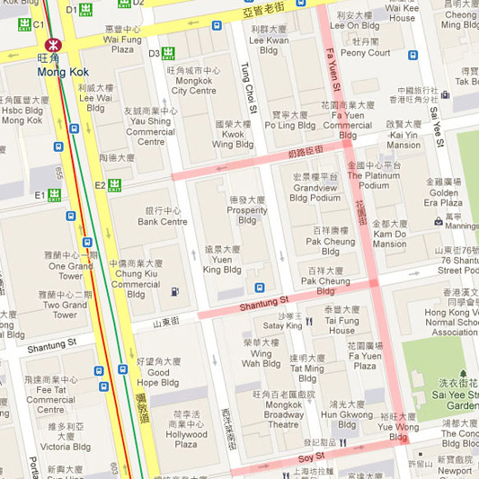

「允記」波鞋街攝影比賽評審已經結束，多謝各位參與今次的活動。以下是今次攝影比賽的入圍名單，並有專人通知入圍者。（落選者恕不另行通知）。另外入圍的青少年組及手機組參賽者必須於兩星期(7月12)內把參賽作品沖印8R相片，相片背後請清楚寫明參加者姓名、Facebook名稱、組別、作品題目、聯絡電話及數碼影像檔案燒成光碟（JPEG 格式及不少於 1MB），寄到或親臨服務通有限公司提交 (觀塘開源道72號，溢財中心。712-3室。辨公時間：星期一至五，上午九時半至下午六時)註明「『允記』波鞋街攝影比賽－最後青少年組／手機組二十強」，逾期恕不受理。
第一階段: 「允記」波鞋街攝影比賽的作品收集已經結束。多謝各位的參與。
第二階段: 於7月3日至7月31日登入以下的網址
http://www.facebook.com/mysteryshoppers 可以欣賞到，由專業評審團隊選出的入圍作品，Facebook用戶更可以以「贊」或「Like」支持心水作品，累積最多「贊」或「Like」的作品就有機會獲得網絡人氣大獎。
備註：所有的「贊」或「Like」截至2013年7月31日晚上11:59分，逾期恕不受理。如有同票情況，會由主辨單位決定得獎者。
網絡人氣大獎：
冠軍一名：現金獎港幣:$1500
亞軍一名：現金獎港幣:$1000
季軍一名：現金獎港幣:$500
第三階段：7月28日 「允記」波鞋街攝影比賽活動，會有一個街頭人氣大獎的投票日。投票當日會於旺角行人專用區西洋菜南街進行一個簡單而隆重的開始儀式。屆時會有9位模特兒穿著運動服裝，以健康形象展示出最高分的9張作品，在場的旺角區市民更可以與模特兒拍照及投票。
備註：當日市民均有2票，但2票必須投給不同作品。如有同票情況，會由主辨單位決定得獎者。
活動日期：2013年7月28日(星期日)
活動時間：2:00-5:00pm
活動地點：旺角行人專用區西洋菜南街
活動內容：讓旺角區市民在旺角行人專用區為波鞋街攝影比賽投選街頭人氣大獎。
主禮嘉賓：
油尖旺區議會議員－仇振輝先生，BBS，JP
油尖旺北分區委員會主席－羅少雄先生
香港油麻地攝影學會名譽會長－陳樹才先生
沙龍影友協會副會－譚健康先生
香港油麻地攝影學會會長－何應文先生
允記集團副總經理－陳永善先生
神秘顧客服務協會主席－黃兆良先生
街頭人氣大獎：
冠軍一名：現金獎港幣:$1500
亞軍一名：現金獎港幣:$1000
季軍一名：現金獎港幣:$500
截止報名日期: 2013年6月17日，逾期恕不受理。
一、 宗旨
1980年代開始，香港掀起了運動服裝熱潮，在波鞋街街段大約有五十間售賣運動鞋和運動用品的店舖，而允記集團的體育用品公司是其中之一，形成了今日一處特色的購物區域。因此今次以波鞋街作為活動主軸，歡迎您透過攝影鏡頭，捕捉波鞋街賣運動鞋和運動用品的文化，凝聚特色購物區域的氣氛，藉以邀請您在繁榮的波鞋街共築屬於你我的美好回憶，更邀請您一同參與2013「允記」波鞋街攝影比賽。
二、 參賽資格
凡愛好攝影之人士，皆可參加。
三、 參賽組別
一）公開組
二）青少年組（21歲或以下）
三）手機組（必須以手機拍攝）
四、 攝影主題
凡於波鞋街內各街景，自然景觀、人文風情和活動寫真等攝影主題皆可。
＊不可以到任何店舖內進行拍攝。
（參賽作品限定以2013年5月16日至6月17日止所拍攝之作品）
五、 活動地點
九龍油尖旺區旺角波鞋街街段。
地圖中紅色範圍為攝影地點。

六、 作品規格
作品格式： JPEG
檔案大小： 不少於 1MB
解像度： 不低於1,200 pixels x 1,200 pixels 像素
＊ 凡使用數碼相機拍攝，提交作品時必須要註明姓名、拍攝相機型號、使用光圈、ISO、快門及作品主題。
七、 參加方法：
公開組別：
參賽者必須附上8R作品相片，相片背後請註明姓名、拍攝相機型號、使用光圈、ISO、快門、作品主題及聯絡電話，另外數碼影像檔案（JPEG 格式及不少於 1MB）燒成光碟與報名表
（下載）交到：服務通有限公司 (觀塘開源道72號，溢財中心 712-3室)註明「『允記』波鞋街攝影比賽」，方可完成參加程序。
青少年組及手機組：
一）所有參賽者必須上傳作品於指定的Facebook主頁並註明作品題目、相機／手機型號、光圈、快門及ISO(如適用)。
二）參賽者必須填妥相關資料包括：Facebook名稱、姓名、參賽組別、身份證頭4個號碼、電郵、聯絡電話、作品題目、相機／手機型號、光圈、快門及ISO(如適用)電郵到：
photocontest@isa-hk.com，註明「『允記』波鞋街攝影比賽」，方可完成參加程序。
青少年組Facebook:
http://www.facebook.com/pages/允記波鞋街攝影比賽-青少年組/351994398233434
手機組Facebook:
http://www.facebook.com/pages/允記波鞋街攝影比賽-手機組/376720755780893
＊當公佈每組最後二十強的青少年組及手機組參賽者必須於兩星期內把參賽作品沖印8R相片, 相片背後請清楚寫明參加者姓名、Facebook名稱、組別、作品題目、聯絡電話及數碼影像檔案（JPEG 格式及不少於 1MB），寄到或親臨服務通有限公司提交 (觀塘開源道72號，溢財中心。712-3室。辨公時間：星期一至五，上午九時半至下午六時)註明「『允記』波鞋街攝影比賽－最後青少年組／手機組二十強」，逾期恕不受理。
八、 獎項及獎額
1)公開組
冠軍一名:現金獎港幣$5000、允記港幣$2000體育用品現金禮券
亞軍一名:現金獎港幣$3000、允記港幣$1000體育用品現金禮券
季軍一名:現金獎港幣$2000、允記港幣$500體育用品現金禮券
各名次均設獎杯及禮品
優異獎:四至二十名:允記港幣$200體育用品現金禮券、禮品、證書
2)青少年及手機組
冠軍一名:現金獎港幣$3000、允記港幣$1000體育用品現金禮券
亞軍一名:現金獎港幣$2000、允記港幣$800體育用品現金禮券
季軍一名:現金獎港幣$1000、允記港幣$500體育用品現金禮券
各名次均設獎杯及禮品
優異獎:四至二十名:允記港幣$200體育用品現金禮券、禮品、證書
*所有得獎作品將收錄成攝影集於各個地方免費派發。
3) 網絡人氣大獎 (由Facebook用戶投票選出)
冠軍一名:現金獎港幣$1500
亞軍一名:現金獎港幣$1000
季軍一名:現金獎港幣$500
4) 街頭人氣大獎 (在旺角街頭由市民投票選出)
冠軍一名:現金獎港幣$1500
亞軍一名:現金獎港幣$1000
季軍一名:現金獎港幣$500
5) 最有創意大獎 (由評審於所有作品中選出)
得獎者一名:現金獎港幣$1000、允記體育用品現金禮券港幣$500
九、 得獎公佈、頒獎時間
每組最後二十強將於7月2日公佈，入圍者會公佈於活動網頁，並有專人通知入圍者。（落選者不另行通知），必須於兩星期內連同參賽作品沖印8R相片, 相片背後請清楚寫明參加者姓名、Facebook名稱、組別、聯絡電話及數碼影像檔案（JPEG 格式及不少於 1MB），寄到或親臨服務通有限公司提交 (觀塘開源道72號，溢財中心 712-3室。辨公時間：星期一至五，上午九時半至下午六時)註明「「允記」波鞋街攝影比賽」最後青少年組／手機組二十強」。
十、 評審
評審人仕將會由不同知名人仕擔當
1. 陳樹才先生［香港油麻地攝影學會名譽會長］
譚健康先生［沙龍影友協會副會］
何應文先生［香港油麻地攝影學會會長］
陳永善先生［允記集團副總經理］
黃兆良先生［神秘顧客服務協會主席］
2. Facebook用戶
3. 各大市民
十一、 評審機制
由允記集團負責人、神秘顧客服務協會主席、香港油麻地攝影學會主席及香港油麻地攝影學會專業評審揀選每組二十強、每組冠、亞和季軍及最有創意大獎。
十二、 附則
一）每一位參賽者最多只可以提交十張作品，如多過十張恕不受理。
二）每一位參賽者只可以在每一組別獲得一個冠、亞和季軍(其中一個)及兩個優異獎。
三）所有參賽作品經查證，若經合成後製，主辦單位將保留法律追訴權。
四）參賽照片可以裁放及可作亮度、對比度、彩色飽和度等適度的調整，不接受黑房特技及電腦後期加工合成制作等技術處理。
五）參賽作品必須是參賽者的個人原創攝影作品，並擁有該作品的全部版權，入選作品如涉及版權、肖像權等法律糾紛，一概與主辦及協辦機構無關。
六）參賽作品不論獲獎與否，概不發還：參賽作品須符合攝影主題，作品須符合規格，違反者視同棄權不予評審。
七）參賽作品不得翻攝、抄襲他人作品，不得於電腦軟體進行數位合成或修改，不得插點加大檔案、不收連作。違反者，不予評審。已得獎者，取消得獎資格（獎位不予遞補），並追回已領取之獎金、獎杯或獎狀。
八）參賽作品不須裝裱，另外郵遞者，請用硬紙板保護並以掛號郵件交寄或親身交件。參賽作品因郵遞不可抗力至生損害，主辦、承辦單位不負賠償責任。
九）所有得獎作品及原稿底片數位檔案之著作財產權，自公佈得獎日起歸屬「允記集團」所有，本單位依法有重製、公開展示及不限時間、次數、方式使用之權利，不另致酬。
十）未獲獎作品不予退回，事後亦不得要求退回。
十一）參加者乃自願參加此活動，並同意及遵守所有由主辦機構及贊助商的安排及決定，如有任何爭議，主辦及承辦機構有最後決定權利。
十二）所有參加本活動的人士均等同已知悉、明白及同意本活動的所有條款。
十三）在拍攝的過程中，嚴禁參賽者進入店舖內進行拍攝，如有何任追究，主辦及承辦機構不會負責。
十四）比賽中所收集的個人資料，只供「允記」波鞋街攝影比賽之用，有部份資料會因為上述目的向公眾披露。
查詢電話：5531 3911
電郵：photocontest@isa-hk.com
網頁：www.mysteryshopper.cc/wankee
wankeegroup.com.hk